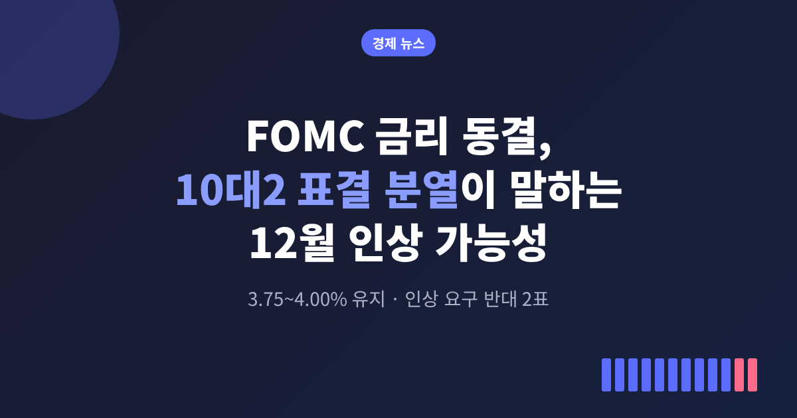
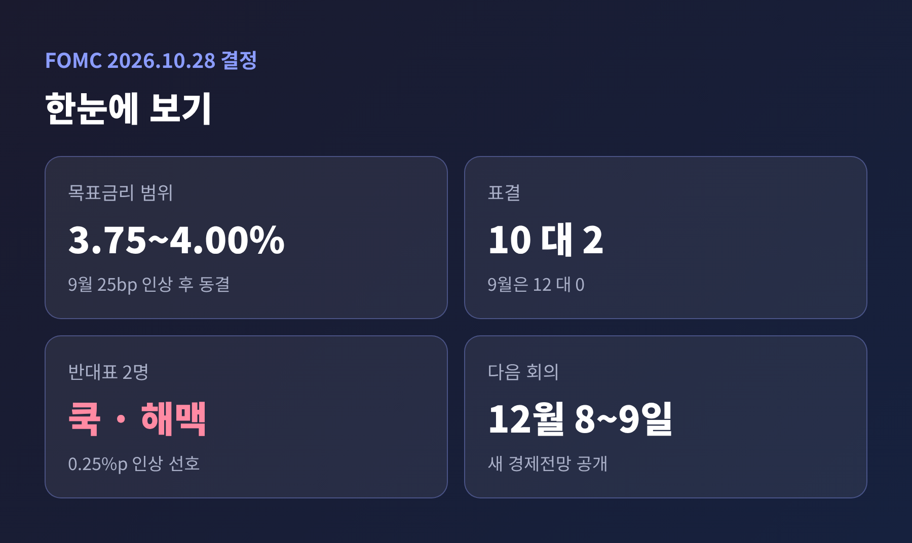
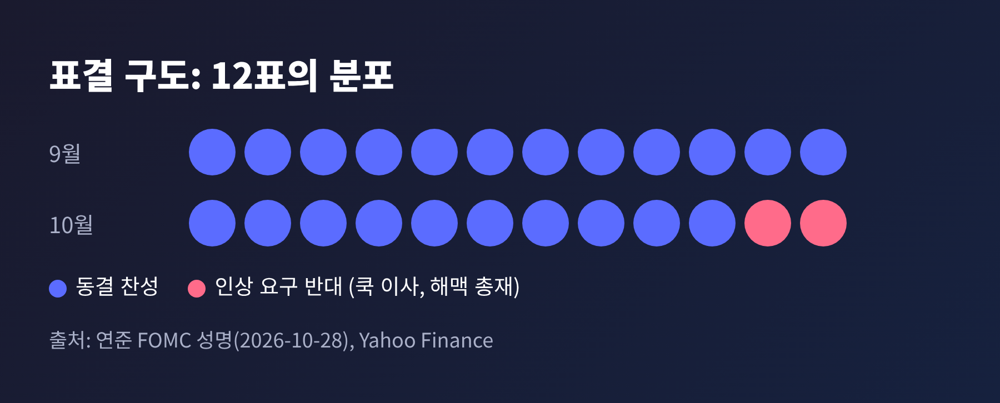
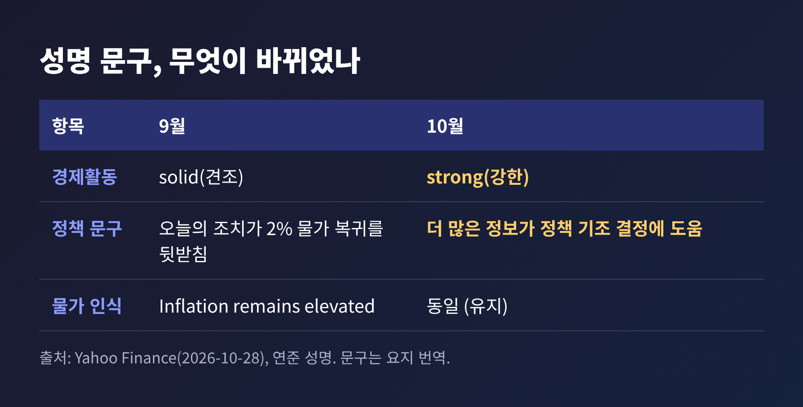
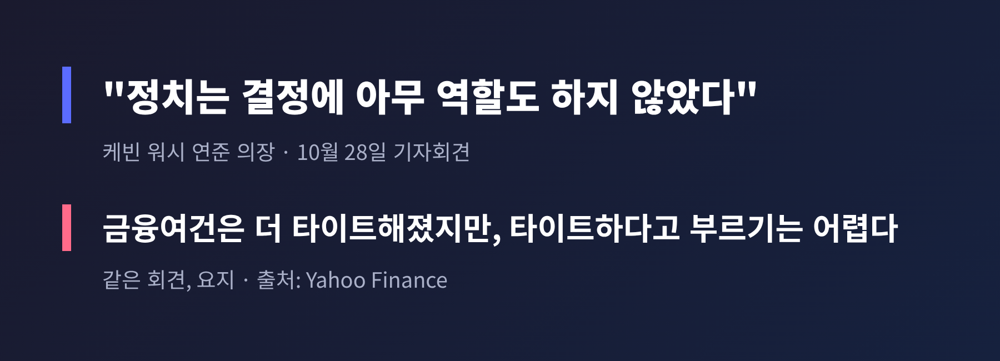
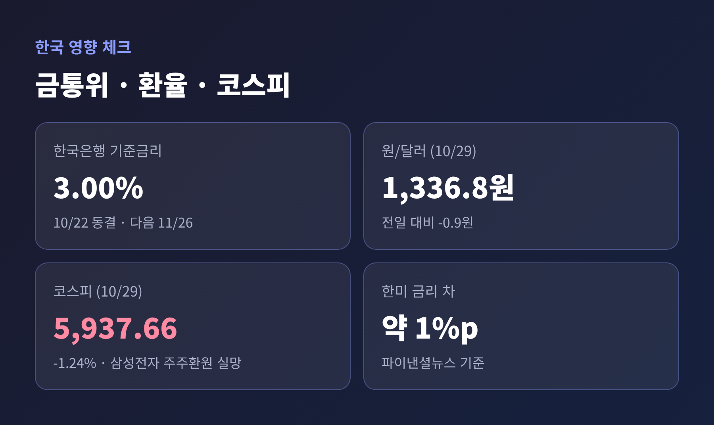

이번 글에서는 미국 시간 10월 28일 열린 FOMC 결과를 정리해 보겠습니다. 금리는 동결됐지만 표결은 10대2로 갈렸고, 두 명은 인상을 요구했습니다. 12월 인상 가능성과 한국 금통위·환율·코스피에 닿는 영향까지 차례로 짚어 봅니다.

연준은 연방기금금리 목표범위를 연 3.75~4.00%로 유지했습니다. 흔히 "3.75% 동결"로 줄여 부르지만, 정확히는 하단이 3.75%인 범위입니다. 연준이 성명을 낸 시각은 현지 28일 오후 2시였습니다.
핵심은 표결입니다. 위원 12명 중 10명이 동결에 찬성했고, 리사 쿡 이사와 베스 해맥 클리블랜드 연은 총재가 반대했습니다. 두 사람이 원한 것은 인하가 아니라 0.25%포인트 인상이었습니다. 성명은 반대 이유를 따로 설명하지 않았습니다.
쿡 이사는 2022년 이사회에 합류한 뒤 처음으로 반대표를 던진 것으로 보도됐습니다. 직전 9월 회의는 12대0 만장일치였으니, 한 달여 만에 분위기가 달라진 셈입니다. 연준은 9월 16일 금리를 0.25%포인트 올렸고, 이번 동결은 인상 이후 첫 쉼표입니다.

동결이라는 단어만 보면 긴축이 끝난 듯 읽힙니다. 실제 시장의 시선은 반대입니다. CME 페드워치 기준 12월 인상 확률은 보도마다 78%에서 87%까지 다르게 전해졌지만, 대체로 80% 안팎입니다. 이번 회의를 앞두고는 인상 확률이 10% 미만이었던 것과 비교하면, 눈은 이미 12월로 옮겨가 있습니다.
배경에는 물가가 있습니다. 9월 소비자물가는 전년 대비 3.7% 올랐고, 전월 대비 상승률 0.6%는 4월 이후 가장 높았습니다. 8월 PCE 물가도 3.4%로 목표 2%를 크게 웃돕니다. 실업률은 4.2%, 성장세는 오히려 강합니다.
채권시장도 이를 반영했습니다. 미 10년물 국채 금리는 약 5.04%로 5%를 넘었고, 2년물은 4.7% 안팎으로 소폭 내렸습니다. 달러는 유로 대비 약해졌습니다. 주식은 크게 흔들리지 않아 S&P500이 0.28% 올랐습니다. 연준 결정이 시장을 놀라게 하지 않았다는 뜻입니다.
성명에서 가장 눈에 띄는 변화는 두 가지입니다. 하나는 경제활동 평가가 "solid"에서 "strong"으로 올라간 점입니다. 다른 하나는 "오늘의 정책 조치가 물가 복귀를 뒷받침할 것"이라는 문장이 "더 많은 정보의 축적이 정책 기조를 정하는 데 도움이 될 것"이라는 취지로 바뀐 점입니다.
해석은 갈립니다. 경기가 강하니 인상 명분이 커졌다고 읽을 수도 있고, 정보를 더 보겠다는 말은 12월 결정을 열어 두겠다는 뜻으로 읽을 수도 있습니다. 뉴스1은 시장이 성명과 기자회견을 예상보다 덜 매파적으로 받아들였다고 전했습니다. 반면 "물가는 여전히 높다(Inflation remains elevated)"는 문구는 그대로 유지됐습니다.

회견의 첫 쟁점은 정치였습니다. 중간선거가 약 일주일 앞이고, 트럼프 대통령은 금리를 더 낮춰야 한다며 위원들이 정치적이라고 비판해 왔습니다. 케빈 워시 의장은 "정치는 결정에 아무 역할도 하지 않았다"고 잘라 말했습니다. 이틀간의 회의에서 정치에 관한 발언을 들은 적이 없다는 설명도 덧붙였습니다. 대통령의 비판에는 답하지 않았습니다.
두 번째는 12월입니다. 워시 의장은 위기 상황이 아니면 포워드 가이던스, 즉 다음 결정을 미리 알려 주는 방식을 믿지 않는다고 했습니다. 본인은 점도표에 점도 찍지 않는다고 했습니다. 다음 회의 방향을 확답하지 않은 이유입니다.
그렇다고 문을 닫은 것도 아닙니다. 인플레이션은 거의 6년째 목표를 웃돌고 있으며 이를 낮추는 것이 책임이라고 강조했습니다. 금융여건은 이전보다 빡빡해졌지만 "긴축적"이라고 부르기는 어렵다는 표현이 이번 회견의 핵심 문장으로 꼽힙니다.
월가의 읽기도 엇갈렸습니다. TD증권은 12월 인상을 피하려면 높은 문턱이 필요하다고 봤습니다. 도이체방크는 9월 전망과 일관될 뿐 명시적 긴축 신호는 아니라고 봤습니다. BNY의 빈센트 라인하트는 추가 긴축의 기반은 닦았지만 대폭 긴축에는 선을 그었다고 평가했습니다.

이번 회의에는 새 점도표가 없었습니다. 참고할 자료는 9월 점도표로, 2026년 말 금리 중앙값이 4.1%였습니다. 현재 범위의 중간값보다 약 0.25%포인트 높은 수준이라 연내 한 차례 추가 인상을 시사합니다. 12월 8~9일 회의에서 새 전망이 나옵니다.
로이터가 10월 16~20일 경제전문가 100명에게 물었더니 전원이 12월 인상을 예상했습니다. 선물시장은 2027년 9월까지 금리가 4.7% 안팎으로 오르는, 약 세 차례 추가 인상을 반영하고 있습니다.
또 하나의 쟁점은 제도 변화입니다. 워시 의장은 연 8회 회의를 유지하되, 2027년에는 한 번을 전략 논의 전용으로 돌려 금리 표결과 성명을 내지 않겠다고 밝혔습니다. 2028년에는 전략 회의가 두 번이 됩니다. 결국 금리 결정 회의는 2027년 7회, 2028년 6회로 줄어듭니다. 시장과의 소통 방식을 바꾸려는 시도로 읽히지만, 월가 일부에서는 물가안정 의지에 대한 의구심도 나옵니다.
한국은행 금융통화위원회는 10월 22일 기준금리를 3.00%로 동결했습니다. 7월과 8월 연속 인상 뒤 처음 쉰 것입니다. 신현송 총재는 만장일치였다고 밝혔고, 11월 추가 인상 가능성은 열어 두었습니다. 3분기 GDP와 10월 물가가 변수입니다. 올해 마지막 금통위는 11월 26일입니다. KB는 11월 인상과 종착금리 3.5%를 전망합니다.
미국이 12월에 다시 올린다면 한미 금리 차는 더 벌어집니다. 파이낸셜뉴스는 현재 차이를 1%포인트로 전했습니다. 한국은행으로서는 환율과 자본 유출 부담을 안고 11월 판단을 해야 합니다. 한편 워시 의장이 신 총재를 20년 지기 "좋은 친구"라고 소개하며 한국 경제에 관심이 많다고 한 대목은 눈길을 끕니다. 정책에 영향을 준다는 뜻은 아니니 선을 그어 두겠습니다.
환율은 29일 원·달러 1,336.8원에 마감했습니다. 전날 FOMC를 앞두고 14원 오른 상승분을 일부 되돌린 것입니다. 동결, 수출기업의 달러 매도가 하락 요인으로 꼽혔습니다. 금통위 날인 22일의 1,324.2원보다는 여전히 높습니다.
코스피는 5,937.66으로 1.24% 내려 6,000선을 하루 만에 반납했습니다. 다만 하락의 주된 이유는 FOMC가 아니었습니다. 삼성전자가 3분기 영업이익 107조 원대를 내고도 주주환원 실행안이 구체적이지 않다는 이유로 주가가 4.13% 내렸기 때문입니다. 연준 이슈는 배경이었고, 직접 방아쇠는 개별 종목이었습니다.

예전에는 연준 결정문 한 장이 시장 방향을 정했습니다. 지금은 의장이 방향을 약속하지 않고 데이터를 보겠다는 체제입니다. 그만큼 12월 9일까지 나올 지표가 중요해집니다.
첫째는 물가입니다. 10월 소비자물가와 PCE가 높은 흐름을 이어 간다면 인상론은 더 힘을 얻을 수 있습니다. 둘째는 성장입니다. 3분기 성장 추적치가 3%를 웃돈다는 의장의 언급대로 경기가 식지 않는다면 인상 명분이 유지됩니다. 셋째는 정치입니다. 11월 3일 중간선거 이후 대통령과 연준의 긴장이 어떻게 흐를지 지켜봐야 합니다.
한계도 분명히 해 두겠습니다. 인상 확률은 선물시장이 매기는 값이어서 집계 시점마다 달라지고, 이번 글의 해석도 현재까지 공개된 정보에 한정됩니다. 12월 인상은 확정된 결정이 아닙니다.
투자 권유 아님: 이 글은 공개된 뉴스를 정리한 정보 제공용이며 특정 자산의 매수·매도를 권유하지 않습니다. 투자 판단과 그에 따른 책임은 투자자 본인에게 있습니다.
정리하면 이렇습니다. 이번 동결은 긴축의 끝이 아니라 확인을 위한 멈춤에 가깝습니다. 10대2라는 숫자가 보여 주듯, 연준 안에서도 다음 걸음을 서두르자는 목소리가 생겼습니다.
"동결은 결론이 아니라 질문입니다." 12월 9일, 그 질문에 데이터가 어떻게 답할지 함께 지켜보시길 권합니다.